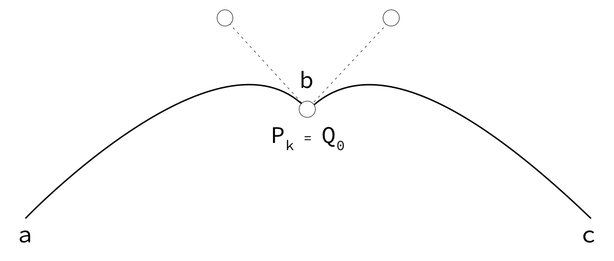
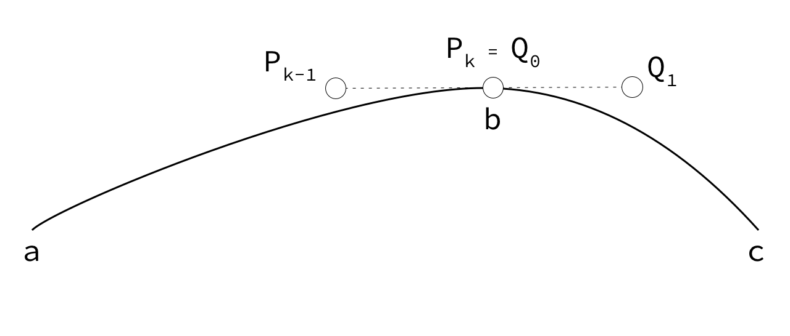
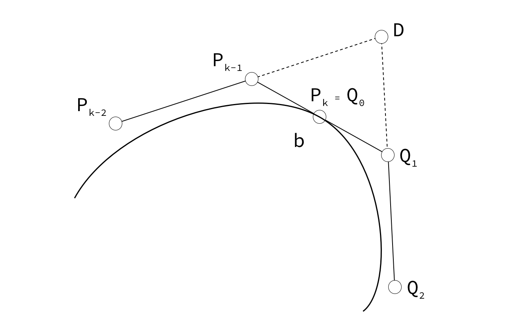

Nel seguente progetto sono state implementate le curve Spline. Le curve permettono al giocatore di
tracciare un percorso che consente alla navicella di raccogliere i checkpoint predisposti nel
livello.
Curve di Bézier
Il nome deriva dal francese Pierre Bézier (1920-1999) che pubblicò per primo un articolo,
mentre
lavorava
presso la casa automobilistica Renault come disegnatore e progettista.
Le curve di Bézier vengono definite a partire da un numero finito di punti P0, P1, ..., Pn che
formano il
poligono di controllo. P0 e Pn costituiscono rispettivamente l'inizio e la fine della curva, gli altri
punti
invece
non si trovano sulla curva ma contribuiscono a modellarne la forma. Il grado della curva è dato
dal numero
dei punti del poligono di controllo -1. Per calcolare una curva di Bézier si può
utilizzare
l'algoritmo di
De Castelau,
un algoritmo ricorsivo che per una curva di grado n prevede n-1 passi ricorsivi.

Algoritmo di De Casteljau
È un metodo che permette di costruire in modo semplice e algoritmico le curve nello spazio aventi
rappresentazione parametrica di tipo polinomiale. Fissato un valore \(\text{\(t \in [0,1]\)}\), esso
permette di calcolare il punto corrispondente sulla curva \(c(t)\) mediante interpolazioni lineari
ripetute
a partire dai punti di controllo.
Dati \(n+1\) punti , la curva di grado \(n\) è data dalla seguente equazione di ricorrenza:
\[P_{i}^{k}(t)=(1-t)P_{i}^{k-1}(t) + tP_{i+1}^{k-1}(t) \quad \text{\(t \in [0,1]\)} \quad , \quad con
\quad
k=1,2, \cdots , n \quad , \quad i=0,1, \cdots , n-k\]
Curve di Bézier lineari
Dati due punti \(P_{0}\) e \(P_{1}\) dello spazio affine, la curva di Bézier determinata da
questi
due punti e l'interpolazione lineare del segmento che li congiunge. Essa si muove di moto rettilineo
uniforme e la legge oraria che descrive questo moto è:
\[P(t)=(1-t)P_{0}+tP_{1} \quad \text{\(t \in [0,1]\)}\]
Il segmento si riduce ad un unico punto se \(P_{0} = P_{1}\).

Curve di Bézier quadratiche
Dati tre punti \(P_{0}\), \(P_{1}\) e \(P_{2}\) dello spazio affine, possiamo iterare l'interpolazione
lineare ottenendo così una curva di Bézier quadratica definita dalla funzione:
\[P(t)=(1-t)^2 P_{0} + 2t(1-t)P_{1} + t^2 P_{2} \quad \text{\(t \in [0,1]\)}\]
Se i tre punti sono allineati, si ottiene ancora un segmento, anche se non più percorso a velocità
costante.

Curve di Bézier cubiche
In modo analogo si definiscono le curve di Bézier di terzo grado, iterando una volta in più
il
procedimento
di interpolazione lineare. Dati 4 punti \(P_{0}\), \(P_{1}\), \(P_{2}\) e \(P_{3}\) la legge oraria che
descrive questo moto è data dalla funzione parametrica:
\[P(t)=(1-t)^3 P_{0} + 3t(1-t)^2 P_{1} + 3t^2(1-t) P_{2} + t^3 P_{3} \quad \text{\(t \in [0,1]\)}\]

Curve Spline
Si può pensare alle curve Spline come attaccature di curve di Bézier, queste curve possono
essere
lineari,
quadratiche, cubiche o di grado maggiore. Nel nostro caso si è deciso di utilizzare curve di Bézier
di grado
3 che ci permettono di tracciare il primo
e l'ultimo punto di ogni segmento e utilizzare gli altri due punti per modificarne la forma.
Uno dei principali vantaggi di una curva Spline è il fatto che la modifica di un punto di
controllo non si ripercuote su tutta la curva ma
solo su
una sua parte, questo permette quindi un controllo locale di quest'ultima. Nel gioco questo vantaggio
è
rilevante perchè permette al giocatore di cambiare una singola traettoria senza modificare le
altre
preconfigurate.
Esistono diverse classi di incollamento tra due curve \(P\) e \(Q\) (curve con lo stesso grado \(k\)).
Sappiamo che \(P\) è individuata in \(\{P_{0},\cdots,P_{k}\}\) e \(Q\) in
\(\{Q_{0},\cdots,Q_{k}\}\).
\[P_{0} = a \quad , \quad P_{k} = b = Q_{0} \quad , \quad Q_{k} = c\]
-
\(C^{0}\) - questo tipo di incollamento si ottiene con \(P_{k}=Q_{0}\).
Ovvero che l'ultimo punto della prima curva deve coincidere con il primo punto della seconda
curva,
condizione abbastanza ovvia per poter assicurare l'incollamento.
Incollamento di classe \(C^{0}\)

-
\(C^{1}\) - questo tipo di incollamento si ottiene soddisfando \(C^{0}\) e \(P'(b)=Q'(b)\). Il
penultimo
punto della prima curva, l'ultimo punto della prima curva (che coincide con il primo della
seconda curva) ed il primo punto della seconda curva, devono essere sempre allineati. Inoltre
bisogna
far si
che \(P_{k}-P_{k-1}\) e \(Q_{0}-Q_{1}\) siano uguali. Per la realizzazione del progetto è
stata
implementato
questo tipo di curva.
Incollamento di classe \(C^{1}\)

-
\(C^{2}\) - questo di incollamento si ottiene soddisfando \(C^{1}\) e \(P''(b)=Q''(b)\).
Deve esistere
un
punto di intersezione \(D\) chiamato punto di De Boor che si ottiene dall'intersezione di
\(P_{k-2},
P_{k-1}\) con \(Q_{1}, Q_{2}\). Devono essere inoltre mantenuti i rapporti semplici tra
\(P_{k-1},
P_{k}(=Q_{0}), Q_{1}\), \(P_{k-2}, P_{k-1}, D\) e \(D, Q_{1}, Q_{2}\).
Incollamento di classe \(C^{2}\)

Implementazione
La curva implementata, come detto precedentemente, è una curva Spline che presenta incollature di
classe
\(C^{1}\) di curve di Bézier di grado 3. Le funzioni che si occupano di calcolare la curva di Bézier
in
funzione del parametro \(t\) sono:
public Vector3 Lerp(Vector3 a, Vector3 b, float t)
{
return Vector3.Lerp(a, b, t);
}
public Vector3 QuadraticLerp(Vector3 a, Vector3 b, Vector3 c, float t)
{
Vector3 ab = Vector3.Lerp(a, b, t);
Vector3 bc = Vector3.Lerp(b, c, t);
return Vector3.Lerp(ab, bc, t);
}
public Vector3 CubicLerp(Vector3 a, Vector3 b, Vector3 c, Vector3 d, float t)
{
Vector3 ac = QuadraticLerp(a, b, c, t);
Vector3 bd = QuadraticLerp(b, c, d, t);
return Vector3.Lerp(ac, bd, t);
}